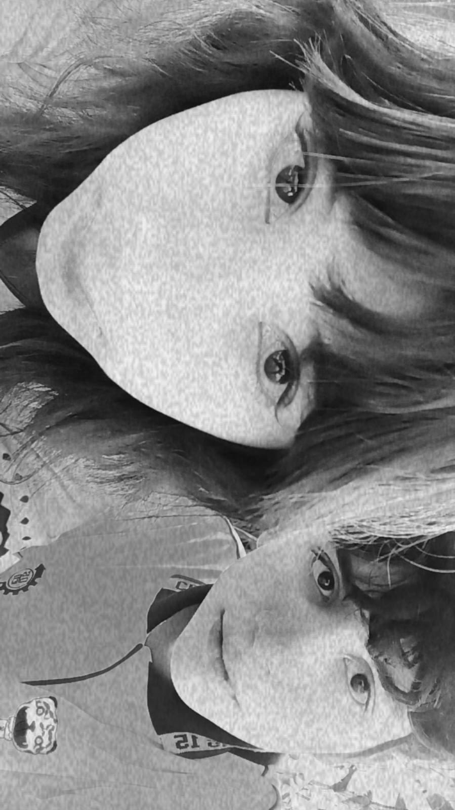
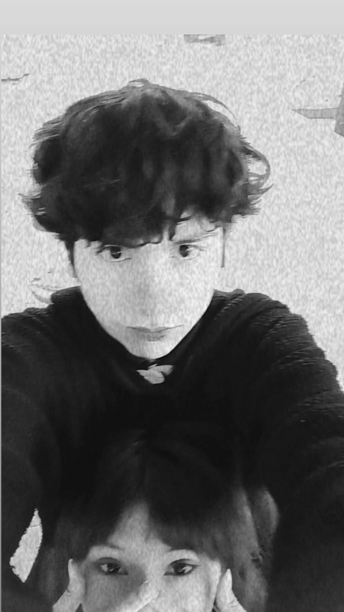
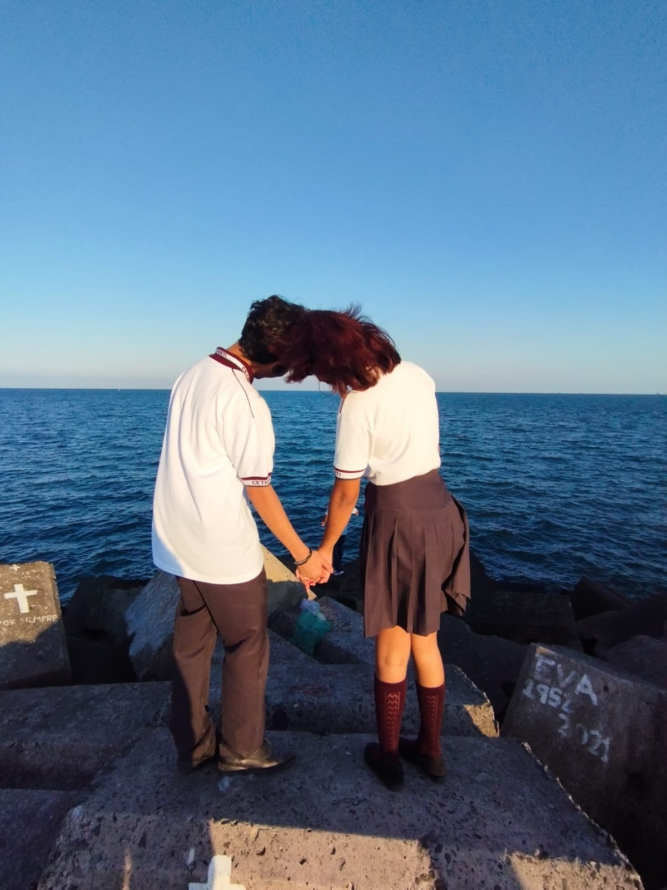
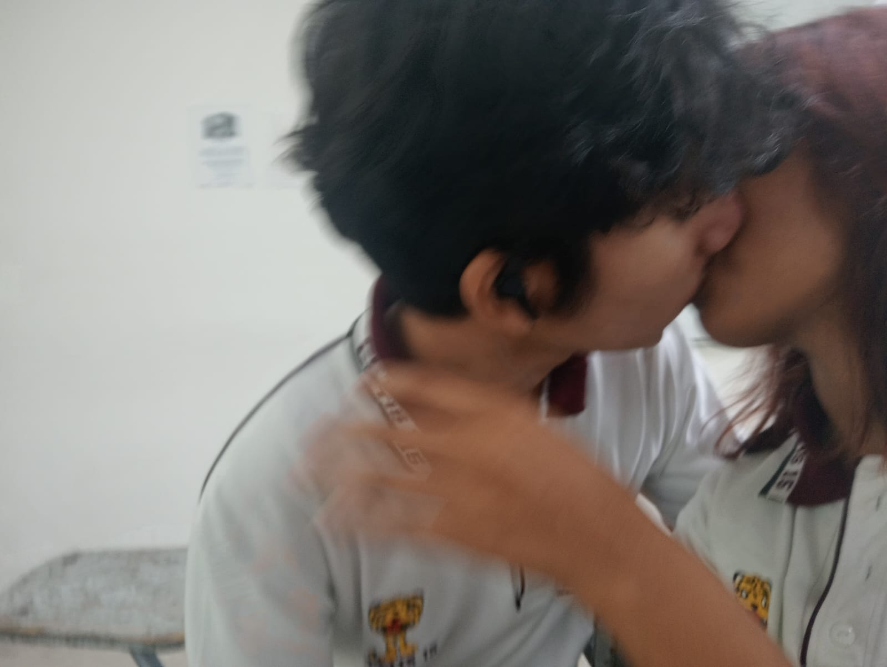
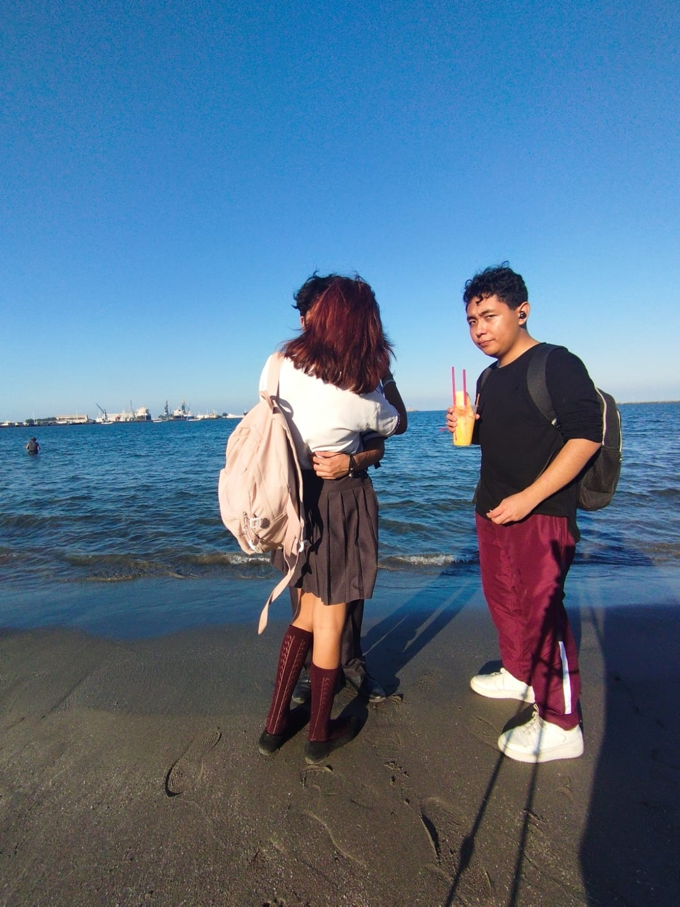
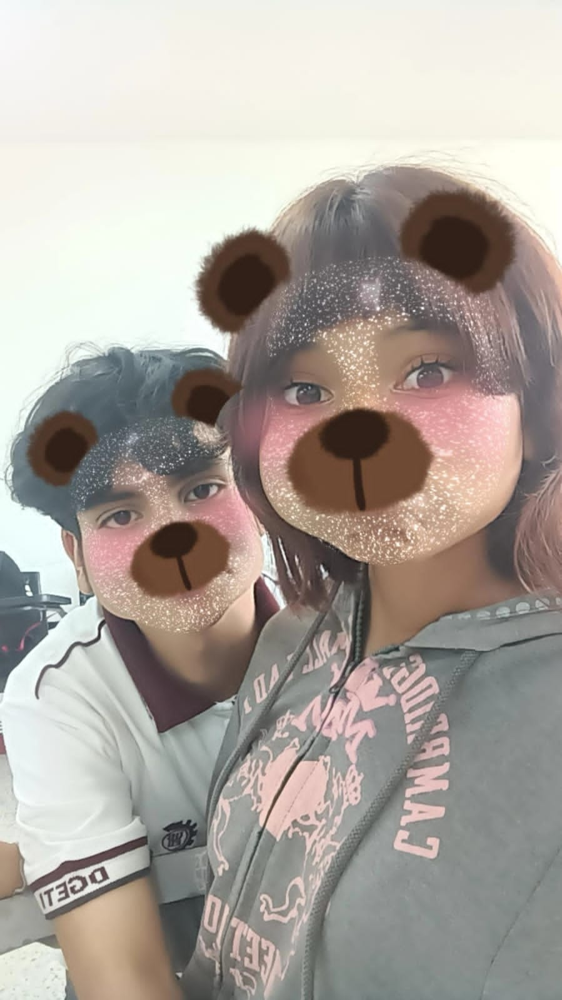
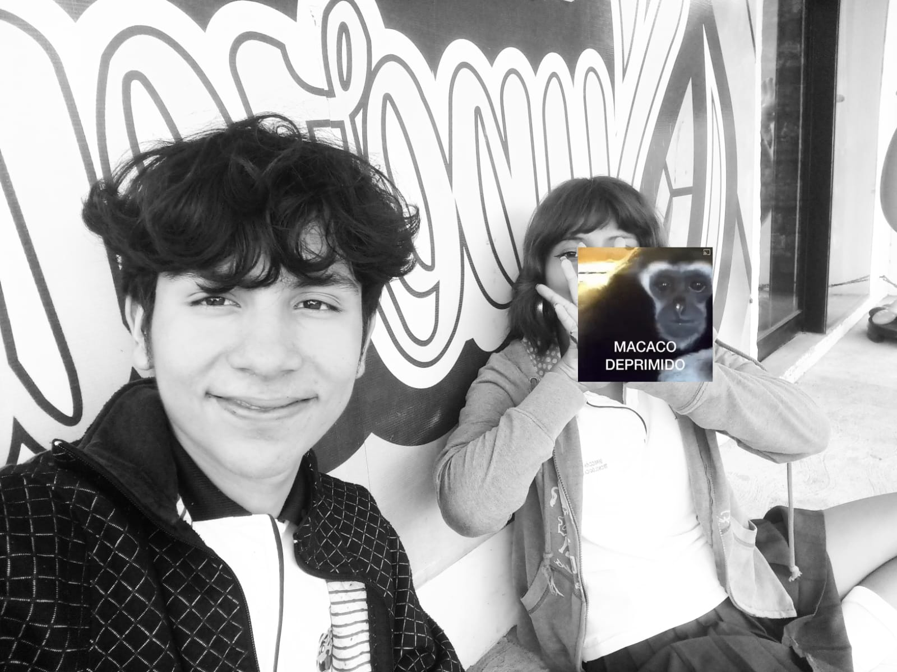
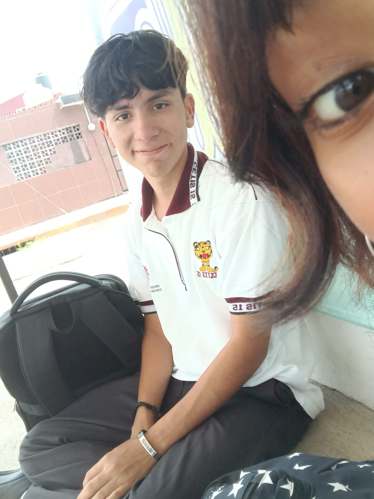

Te amo pulga
Hola pulga te amo inicio esta pagian diciendo lo mas importante, relevante para mi es hacerte saber lo mucho que te amo, aunque nuca encontrare las palabras ni acciones suficientes para demostrarte todo el amor que te tengo y lo mucho que me encantas en diferentes sentidos y aunque no conozco el futuro, tampoco lo puedo ver vea, pero tengo fe en que los dos estaremos bien y terminemos como llegemos a terminar si es que esto termina quiero que sepas que te amo y te ame con todo mi corazon y que no podria tenerte algun rencor u odio hacia a ti y realmente seria todo lo contrario, te tendria un gran agradecimiento por todo lo que pasamos y todos los recuerdos que me enseñaste.
Bueno el motivo de esta pagina era para tener un tipo recuerdo de todo lo que pasamo algunos momentos bonitos que tuvimos y otros un poco mas graciosos JAJAJAJJAA y tambien para que cuando te sientas mal contigo misma entres aqui, veas que ubo una persona que te amo tal y como eres, y lo hermosa que estas y bueno que te sirva de animos para que no te rindas nunca mi niña fuerte te amo bonita queria hacerte este detalle aunque ya te habia hecho una pagina alfinal tuve unos errores espero en esta no JAJAJAJAJJAJA.
Sentimientos mios
En esta parte quiero expresarte cositas que bueno probablemente ya te alla dicho y unas cositas nuevas y otras no tanto, bueno iniando te amo con todo mi corazon tengo que confezar que cuando nos conocimos siempre te me hiciste una niña super amable y buena pero obvio en ese tiempo no me imaginaba que llegariamos a ser tan cercanos JAJAJAJA no me lo esperaba la vrd, pero siempre te me hiciste bonita y sabes que si porque lit me lo preguntaste que si eras bonita aunque si te tenia en un concepto de rarita JAJAJA por las preguntas que luego hacias ahorita las extraño.
Tambien cuando empezaste a ser muy cariñosa conmigo que segun tu no me ligabas ahi pero aja si te creo eh, bueno siempre me senti comodo abrazandote o dejar que me abrazaras y aunque me costaba devolverte los abrazos alfinal me hciste enamorarme de ti y cuando ubo el casi beso me puse nervioso porque nunca habia dado mi primer beso y alfinal fuiste tu la que se lo llevo eh bien ahi JAJAJA y tambien cuando nos dimos el primer beso de muchos me sneti tan feliz de vuelta a mi casa recuerdo que iba con un alivio gigante porque alfin sabia que yo tambien te gustaba como tu a mi o bueno en ese tiempo yo te gustaba mas creo, pero todavia recuerdo la platica que tuvimos ese dia tu disculpandote por eso y yo diciendote que no habia ningun problema JAJAJJAJAJAJ y alfinal el pobre de bryan se tuvo que hacer el examen el solo ese dia ni me preocupe por eso.
Diria que otro momento asi importante fue cuando ibamos a casa de bryan, me besabas y aunque aveces te decia que no simplemente no podia y pues bueno alfinal eres mi debilidad hermosa, otro momento asi de importante que se me paso es cuando estabamos en audiovisuales y me abrazaste y pusiste tu cabeza en mi cuello tengo que decir que es vez no sabia que hacer JAJAJAJ nunca me habia pasado algo asi tlj, otro momento tambien fue cuando nos quedamos solos en tercer semestre en el salon ese dia se sintio mucha tension y capaz si no ubiera puesto un alto en el momento que lo puse la vrd me ubiera seguido besando contigo JAJAJAJA pero bueno de ahi seguiria el creo que le acuario aunque tambien sacamos creo antes de eso la vez del proyecto de ingles ese dia tambien fue muy bonito.
Y bueno el acuario fue un dia hermoso ese dia me enamore mas de ti y aunque no estuve tanto contigo pido perdon por eso porque no encontraba como acercarme JAJAJA aunque aun asi te bese como 3 veces agradesco aver conocido tus labios, de ahi seguiria recursamiento que sinceramente esas idas al parque fueron las mejores fue las veces que mas tiempo estuvimos juntos sin que nadie estuviera llamando o molestando, siempre disfrute de manera increible cuando estabamos juntos y aunque ahorita nos hemos visto han sido por poco tiempo y tampoco pudimos estar muy cariñosos o no tanto como yo quisiera JAJAJA, de ahi en el cetis siempre fuiste lo mejor de mi dia hablar, estar contigo, besarte y abrazarte siempre sera lo mejor que me habra pasado el año pasado y este, sin olvidarnos mencionar el dia que me probaste enterito JAJAJA muy buen dia buen marzo.
Tambien ubo sus momentos malos que no tenian que ver con nosotros sino con terceros y bueno alfinal tuvimos los dos nuestros errores al no hacer cierta cosas y permitir otras pero de todo lo que vivi contigo eso es minimo pero aun asi tuvo su importancia, bueno alfinal gracias a todo eso pues posiblemente nos dejemos de hablar ojala que no pero aunque sea asi no te tendre en ningun mal concepto siempres seras la niña que me robo el corazon a tal punto de poder hacer lo que quiera con el, otra cosa que mencionar tu hermanita siempre me cayo super bien JAJAJA muy buena compañera de juego y con bastante imaginacion no como otra que no mencionare su nombre pero se llama angeles JAJAJA es broma pulga pero eso si nadie de tu familia me cayo mal solo me ponian nervioso porque me gustas mucho JJSSJSJ y el que mas nervioso me pone es tu mama tlj ns porque.
Si esto llega a terminar te prometo que no podre olvidarte aunque lo intente eres alguien que me ha marcado en mi corazon y siempre tendra una oportunidad de intentar otra vez aunque creo que eso no pasara, aun asi no me olvides si? te amo mucho y tengo ganas de verte ya, estoy emocionado por mañana.
Recuerdos y fotos de nosotros
Siempre me gustaron este tipo de fotos nuestras las amo
Esta para mi ha sido de mis fav siempre me encanta como salimos los dos
Otra de mis fav JAJAJAJ ns el momento fue muy bonito pero bueno que momento contigo no fue bonito?
AWWWWWW como olvidar este momento AJJAJA gran dia aunque siempre que veo esta foto siempre digo que pudo ser mejor el corazon pero neta ame el dia.
la siguientes 2 fotos no te van a gustar te amo
jijijijijijijijijiji
muak te amo para cuando otro beso asi?
iconica foto muy buen dia AJJAJA
Otra foto bonita mmm como que nos vemos muy bien juntos no? hay que quedarnos asi

top 1 o 2 de todas las fotos que tenemos sinceramente pinche hermosura sale en la foto y alado salgo yo guapo JAJAJA broma pero si estas bien preciosa
Fue de las utimas veces que fuimos al supercito mientras seguias en el cetis
Y bueno llegamos a la actualidad y se que me faltaron mas fotos y ahi las tengo pero tengo sueñito JAJAJAJ la hora exacta que escribo esto es 4:15 am te amo hermosa nunca digas no lo hice.
Animos
Bueno pulga no se en que momento necesites esto y en caso que ya no este contigo quiero decirte que tu puedes con todo has sobrellevado y aguantado a idiotas de todo tipo mas de lo que debias o debes y aunque aveces tengas dudas de ti misma yo se que podras con todo lo que te venga y con todo lo que te propongas y si las cosa no salen como lo planeabas o te ubiera gustado que pasaran ntp todo alfinal se acomoda a como debe ser pero siempre debes avanzar en tu vida hermosa nuca te detengas porque el tiempo no espera y si tienes algo que piensas hacer no lo dejes para despues o lo ignores porque el tiempo se pasa super rapido y cuando veas ya tienes el mismo problema ya sea una persona u otra cosa por varios años o meses, se que todo es dificil aveces y que no siempre actuamos de la mejor manera pero tlj que nunca seras una mala niña o alguien que haga las cosas para lastimar, habra personas que te quieran hacer menos para poder estar contigo o simplemente para tenerte con ellos y bueno lamentablemente te toparas con ese tipo de personas y cuando lo hagas si quieres estar bien tendras que alejarte de ellos o ellas porque ese tipo de personas no entienden por mucho que hables con ellos, asi que pulga yo se que puedes con todo aunque no tengas respuestas para todo y en no sepas todo lo que quieres o no quieres, esas son cosas que deberas ir descubriendo tu sola o aveces acompañada tu puedes amooooor yo te apoyo siempre ten encuenta eso sin importar que tan lejos estemos siempre tendras mi apoyo para todo y ojala te compres tu motoneta aunque utilizala responsablemente porfavor JAAJAJ te amo y si no estamos juntos consigue alguien que te ame sin lastimarte porque las relaciones si son dificiles pero nuncan te lastiman o te hacen sentir culpable o menos si eso pasa pues obvio no es un buena relacion vea JAJAJAJAJAJA te amo.
¿Dudas preciosa?
Bueno supongo que estaras en una situacion donde tendras alguna duda sobre algo por poner algun ejemplo imaginemos que tus dos amores de tu vida se te declaran en el mismo lugar y tu dudas porque los amas a los dos JAJAJAJAJJAJAJAJA BROMA pero ya encerio si tienes dudas de ti misma por no sentirte suficiente hacia algo o crees que eres mala persona puedo decir que estas en lo incorrecto si tu pensamiento son cosas malas trata de pensar en que te han dicho las personas que si les importas de vrd y no las personas que simplemente fingen o no les alcanza su querer no es indirecta a nadie JAJAJJA aclaro pero tu puedes hermosa yo te apoyo siempre por cualquier cosa siempre me tendras para desahogarte de lo que quieras en mi chat y siempre te contestare porque siempre me vas a importar y quiero que estes bien y se que un dia saldras y te libraras de toda la tristeza y dolor que tu coranzon lleva, pero mientras eso no pase porfavor trata de hacer amistades reales con las que puedas hablar de todo y sean confiables tlj que seran un gran alivio para ti sip? te amo hermosa. y ademas trata de disfrutar las cosas que te pasen y ver el lado positivo.
Perdon si esta pagina fue mas sencilla que la anterior solo que en esta queria que quedara como una carta y no estar jugando mucho espero te alla gustado te amo.